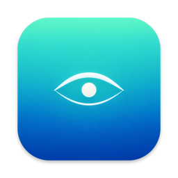

BlinkGuard 护眼
Mac 菜单栏眨眼提醒：数你的每一次眨眼，眨得太少就提醒你。
隐私政策
BlinkGuard 不收集、不上传、不分享任何数据。
- App 使用 Mac 的摄像头检测眨眼。画面只在内存中逐帧分析，不保存、不录制、不上传，分析完即丢弃。
- App 只记录每次眨眼的时间、闭眼时长和闭合深度，以及每分钟的汇总，保存在本机的 App 容器里，删除 App 即一并删除。
- App 没有账号系统，没有统计分析、广告或第三方 SDK；它在 App Sandbox 中运行，并且没有申请网络访问权限。
- 锁屏或屏幕睡眠时摄像头自动关闭；你也可以随时在面板里暂停。
Privacy Policy (English)
BlinkGuard does not collect, upload or share any data. The app uses your Mac's camera to detect blinks. Video frames are analyzed in memory only and are never saved, recorded or transmitted. The app records only the time, duration and depth of each blink plus per-minute summaries, stored in the app's local container and removed with the app. There are no accounts, analytics, ads or third-party SDKs; the app runs in the App Sandbox without network access. The camera turns off automatically when the screen is locked or asleep, and you can pause at any time.
最后更新 / Last updated: 2026-11-19
使用支持
它能做什么
- 菜单栏显示最近 60 秒折算的每分钟眨眼次数，低于阈值时变红。
- 每分钟眨眼低于设定次数（默认 10 次），或连续若干秒（默认 15 秒）没眨眼时，屏幕中央浮现提醒，可配声音和系统通知。
- 面板里看实时睁眼波形、最近 40 次眨眼的深度（完整眨眼 / 半眨），以及最近 30 分钟每分钟的眨眼次数。
常见问题
- 菜单栏看不到图标？ 菜单栏图标太多时，新图标会被刘海挡住。在「系统设置 → 菜单栏」里隐藏一些图标，或在聚焦搜索里再次打开 BlinkGuard，会直接弹出面板。
- 显示「–」？ 需要连续看到你的脸约 40 秒才会给出频率；离开座位的时间不计入。
- 正常应该眨多少次？ 放松时大约每分钟 15–20 次，盯屏幕时常掉到 5–7 次。
- 摄像头权限被拒绝了？ 到「系统设置 → 隐私与安全性 → 摄像头」打开 BlinkGuard。
BlinkGuard counts your blinks with the Mac camera and gently reminds you when you blink too little. If the menu bar icon is hidden behind the notch, open BlinkGuard again from Spotlight to show its panel.